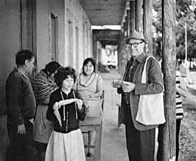

You are here: Past Lectures > George M. Foster > Home
|  |
Fifth
Emeritus Lecture
|
Copyright ©2002 by the Library, University
of California, Berkeley. All rights reserved.
Document maintained on server: http://sunsite.berkeley.edu/
If you have questions about this page, mail scalpest@library.berkeley.edu
Last update
01/13/2003
. SunSITE Manager: manager@sunsite.berkeley.edu